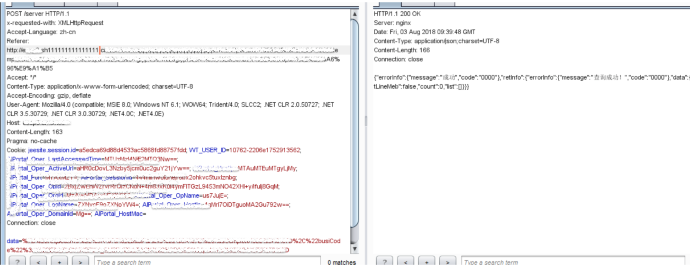

CSRF跨站请求伪造【中风险】
跨站请求伪造(Cross-site request forgery，CSRF)，是攻击者通过一些技术手段欺骗用户的浏览器去访问一个自己曾经认证过的网站并执行一些操作（如发邮件，发消息，甚至财产操作如转账和购买商品）。由于浏览器曾经认证过，所以被访问的网站会认为是真正的用户操作而去执行。XSS利用的是用户对指定网站的信任，CSRF利用的是网站对用户浏览器的信任。XSS是获取Cookie后伪造攻击，而CSRF是利用同一个浏览器中共享Cookie进行攻击。
攻击原理
假如一家银行用以执行转账操作的URL地址如下:
http://www.examplebank.com/withdraw?account=AccoutName&amount=1000&for=PayeeName，那么，一个恶意攻击者可以在另一个网站上放置如下代码:
<img src="http://www.examplebank.com/withdraw?account=Alice&amount=1000&for=Badman"\>
如果有账户名为Alice的用户访问了恶意站点，而她之前刚访问过银行不久，登录信息尚未过期，那么她就会损失1000美元。
这种恶意的网址可以有很多种形式，藏身于网页中的许多地方。此外，攻击者也不需要控制放置恶意网址的网站。例如他可以将这种地址藏在论坛，博客等任何用户生成内容的网站中。这意味着如果服务器端没有合适的防御措施的话，用户即使访问熟悉的可信网站也有受攻击的危险。
通过例子能够看出，攻击者并不能通过CSRF攻击来直接获取用户的账户控制权，也不能直接窃取用户的任何信息。他们能做到的，是欺骗用户浏览器，让其以用户的名义执行操作。
程序的重要业务操作没有验证请求来源，也未包含随机令牌。

安全建议：
服务端的防御：
- 验证HTTP Referer字段
- 请求地址中添加token并验证（token不放在cookie中，放在http请求参数中，服务端对其进行验证）
- 将token加入http头属性中，避免了token出现在浏览器中，被泄露。
客户端防御：
为了配合服务端对token的验证，那么客户端也需要在访问时生成token，这是利用js来给html中的链接和表单请求地址附加csrftoken代码，其中已定义token为全局变量，其值可以从session中得到。